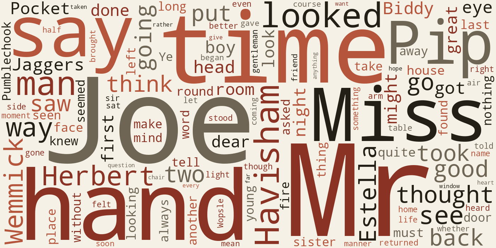
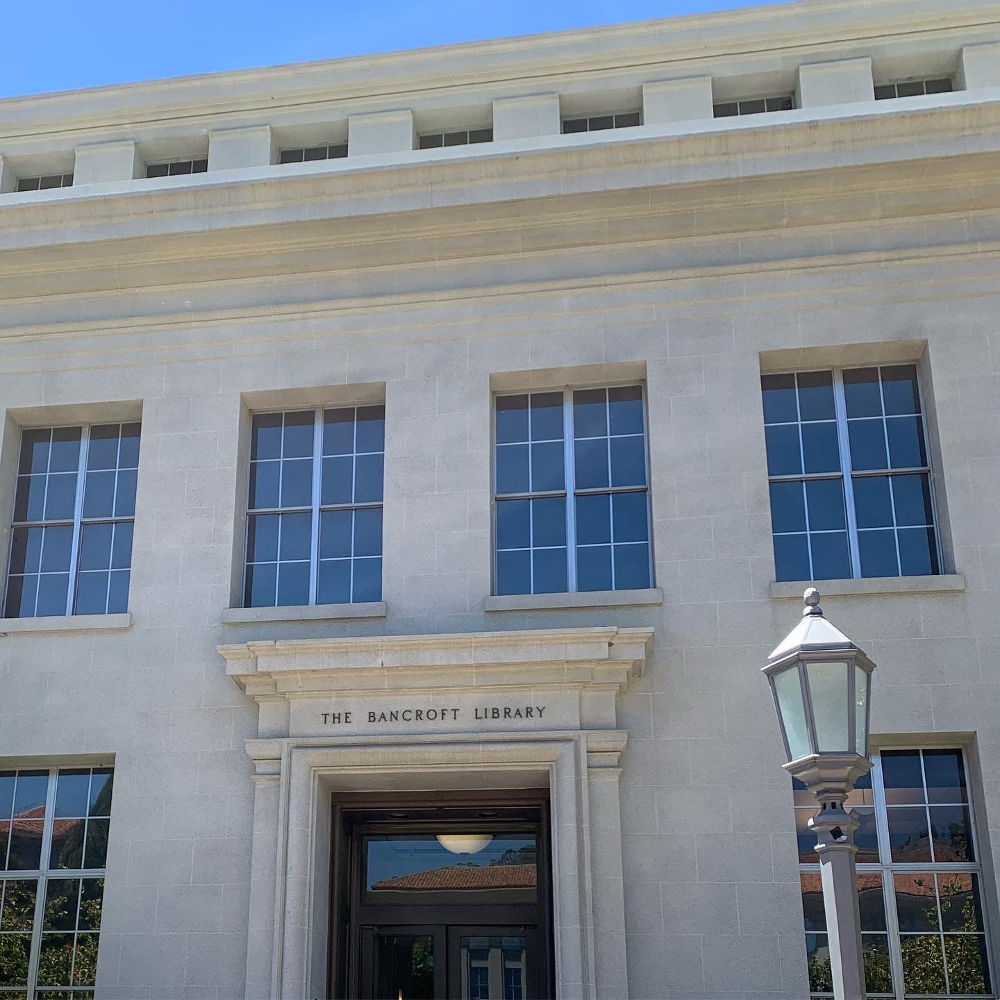

July 13, 2026 · Week 1 · Prompt #1
Finding Connections Between Technology, Humanities, and Archives
Before this class, I thought of technology and the humanities as two separate areas. Technology made me think about computers, programming, and new inventions, while the humanities made me think about history, literature, culture, and the study of people. After learning more about digital humanities, I now see it as a combination of both fields. To me, digital humanities is the intersection between technology and human experiences. It uses digital tools to help researchers ask new questions, analyze information differently, and understand the past in ways that may not have been possible before.
One reason I find digital humanities interesting is because technology can help us notice patterns that are difficult for humans to see on their own. For example, if I analyzed texts from the Victorian era, I could use digital tools to examine changes in word usage, common themes, or how certain ideas were discussed throughout that time period. Instead of only reading one book or one document, digital methods could allow me to compare thousands of texts and find larger trends. I think this shows how technology can support humanities research rather than replace the human perspective behind it.

Callaway et al.'s article, "The Push and Pull of Digital Humanities: Topic Modeling the 'What Is Digital Humanities?' Genre", helped me understand this relationship between technology and interpretation. The authors use topic modeling, a digital method that identifies patterns across large collections of text, to study how people describe digital humanities. What stood out to me is that digital tools are not just about collecting data or creating charts. They can help researchers discover connections and patterns that lead to deeper questions. However, the technology itself does not create meaning. Researchers still have to interpret the results and think critically about what those patterns represent.
This idea connects to why archives are important. I think of archives as a form of history that allows people in the future to learn from the past. Without archives, many important stories, experiences, and perspectives could disappear. Archives give us access to information that helps us understand how people lived and how societies changed over time. Digital archives have made this even more accessible because people can explore historical materials without physically traveling to an archive.
However, archives are not simply collections of information that exist without human influence. Milligan's "What Is an Archive? In the History of Modern France" made me think more critically about how archives are created and maintained. Archives involve decisions about what is preserved and what is left out. Someone has to decide which documents, objects, or stories are important enough to save. This means archives can shape the way we understand history because the materials available to us influence the stories we tell about the past.

Thinking about archives this way has made me more aware that digital humanities is not only about using technology to study old materials. It is also about questioning how information is collected, organized, and shared. When we use digital tools to analyze archives, we have to consider what information is available and what perspectives might be missing. Technology can reveal new patterns, but we still need to think about the larger historical and social context behind those patterns.
Moving forward, one topic I would like to explore more through digital humanities is the relationship between technology and education. Technology has changed the way students learn, how teachers share information, and how people access knowledge. I am curious about whether digital tools improve education, how students interact with technology differently, and what challenges come from depending more on digital resources.
Overall, I see digital humanities as a way to combine creativity, technology, and critical thinking. It allows us to explore questions about people and history while using new methods to discover information. Whether it is analyzing historical texts, studying educational technology, or exploring digital archives, I am interested in how these tools can help us better understand human experiences and uncover stories that may have been overlooked.